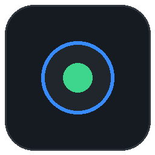
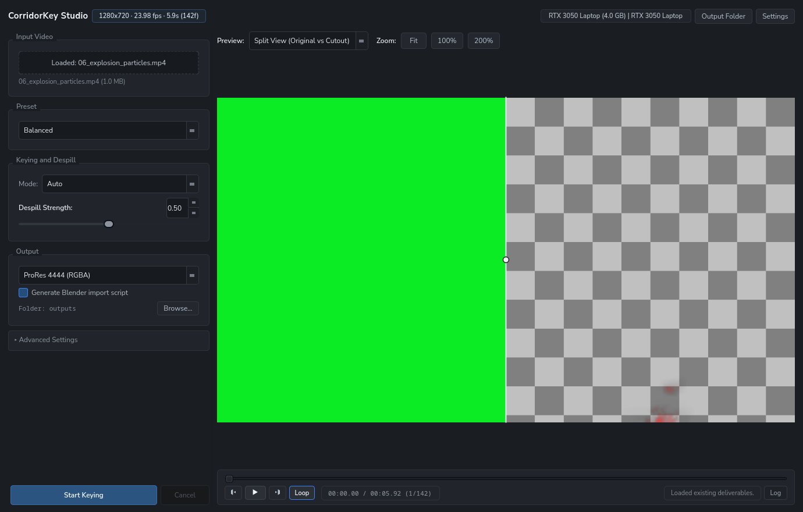

Download standalone installer:
Standalone installers auto-detect your GPU, pick the drive with the most space, download model weights, and set up desktop shortcuts.

Drag the slider horizontally to compare raw green screen footage with the AI keyed result.
High-resolution 1280x720 particle extraction demonstrating despilled semi-transparent edges and fine element isolation.
Balanced Studio for hardware-optimized processing, Maximum Quality for fine hair strands and edge detail, High-Performance Workstation for multi-batch throughput on 24GB+ cards (RTX 3090/4090, A6000, A100), Fast Turnaround for quick reviews, or Low-VRAM Staged on 4GB-6GB laptop GPUs.
import_to_blender.py script is saved next to your output video.
| Deliverable | Codec / Container | Target Pipeline |
|---|---|---|
| Blender ProRes 4444 | .mov (prores_ks, 10-bit RGBA) | Blender compositor & image plane cards (includes auto-wiring script) |
| Blender PNG Sequence | .png (Numbered RGBA frames) | Blender image sequences, Cycles, and Eevee cards |
| DaVinci Resolve Pack | Dual .mov (ProRes 422 HQ Fill + Matte) | External Matte node workflow in DaVinci Resolve |
| WebM VP9 RGBA | .webm (libvpx-vp9, yuva420p) | OBS Studio streaming, browser overlays, Godot and Unity engines |
| QuickTime Animation | .mov (qtrle, Lossless RGBA) | After Effects and Premiere Pro uncompressed timelines |
| OpenEXR Sequence | .exr (32-bit float) | ACES color management and VFX composite graphs |
| TIFF 16-bit Sequence | .tif (rgba64le) | Nuke, Fusion, and high bit-depth archival |
| Standard Passes | Dual .mp4 (Despilled FG + Alpha) | Quick previews and custom shader inputs |
| Requirement | Specification |
|---|---|
| GPU Architecture | NVIDIA GeForce, RTX, Quadro, or Tesla GPU with CUDA support. |
| Hardware Tiers | Adaptive 5-tier scaling (Entry 4GB, Mid-Range 6GB, Desktop 8-10GB, High-End 12-16GB, and Ultra Workstation 24-80GB). Automatically tunes Stage-2 batch sizes, Swin window batches, and Foundation chunking to maximize throughput without memory bottlenecks. |
| Software | ffmpeg must be installed on your system. |
| Branch Updates | Linux installations track and update from app-linux. Windows installations track and update from app-win. When an update is detected, an OLED notification banner displays live download progress with automatic Git sync and zip fallback. |
# Linux: git clone -b app-linux https://github.com/Yancovert/CorridorKey-Studio.git cd CorridorKey-Studio && ./CorridorKey-Studio-Installer-Linux # Windows: git clone -b app-win https://github.com/Yancovert/CorridorKey-Studio.git cd CorridorKey-Studio && CorridorKey-Studio-Setup.exe
Notice: Non-Commercial & Personal Experimentation
CorridorKey Studio is an independent, non-commercial open-source project created strictly for personal research, educational experimentation, and community workflow development. It is not affiliated with, sponsored by, or endorsed by Corridor Digital, Zachary Harris, or Niko Pueringer. No commercial monetization, licensing, or commercial distribution is intended or offered. For the official commercial software, plugins, and production licenses, please visit corridorkey.com.